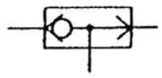
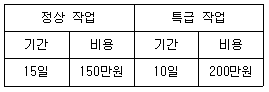

기계가공기능장 (2008-07-13 기출문제)
1과목: 임의 구분
1. 어큐물레이터의 용도와 관계가 먼 것은?
- 맥동 제거
- 충격 흡수
- 에너지 저장
- 오염물질의 여과
(정답률: 66%)

2. 공기압축기 사용상 주의 사항에 대한 설명 중 틀린 것은?
- 공기 탱크 내의 드레인을 제거한다.
- 소음과 진동에 대한 대책을 세워야 한다.
- 공기 흡입구에 반드시 흡입필터를 설치한다.
- 공기 흡입구의 온도와 습도를 높게 한다.
(정답률: 90%)
3. 피스톤의 왕복운동을 활용하여 작동유에 압력을 주며 고압에 적당하고 누설이 적어 효율을 높일수 있고 사축식과 사판식의 두가지 종류를 가지고 있는 펌프를 무엇이라 하는가?
- 피스톤펌프(Piston v
- 복합펌프(Combination pump)
- 가변용량형펌프(Variable delivery vane pump)
- 기어펌프(Gear pump)
(정답률: 63%)
4. 다음 그림은 무엇을 나타내는 기호인가?

- 고압 우선형 셔틀밸브
- 저압 우선형 셔틀밸브
- 급속배기밸브
- 파일럿 조작 체크밸브
(정답률: 49%)
5. 유압 회로에서 파선이 사용되는 용도로 맞는 것은?
- 파일럿 조작관로
- 주관로
- 전기신호선
- 포위선
(정답률: 61%)
6. 지그나 고정구에 사용되는 비철재료 중에서 비중에 대한 강도의 비가 높고, 가공성이 좋으며, 용접과 기계적 접합이 용이한 재료이지만 특성상 가공중에 화재의 위험성이 있는 재료는?
- 비스무스 합금
- 알루미늄
- 우레탄
- 마그네슘
(정답률: 66%)
7. 치공구의 3요소로 거리가 먼 것은?
- 위치결정면
- 클램프
- 위치결정구
- 공작물
(정답률: 59%)
8. 일반적으로 대량생산된 공작물의 막힌 구멍 깊이를 측정하는데 적합한 한계 게이지는?
- 터보 게이지
- 플러시 판 게이지
- 플러그 게이지
- 스냅 게이지
(정답률: 49%)
9. 봉재와 같은 원형부품의 위치결정시 수직(상하방향)중심의 정도가 가장 중요할 때 사용되는 V블록의 각도로 가장 적합한 것은?
- 60°
- 90°
- 110°
- 120°
(정답률: 80%)
10. 소형 박스 지그로 장착과 탈착이 용이하도록 힌지를 사용하는 지그는?
- 채널 지그
- 리프 지그
- 트라이언 지그
- 샌드위치 지그
(정답률: 60%)
11. 다량의 제품의 치수가 허용치수 이내에 있는가를 검사하기에 가장 적합한 게이지는?
- 다이얼 게이지
- 한계 게이지
- 버니어 캘리퍼스
- 마이크로미터
(정답률: 83%)
12. 삼침법에 의한 미터나사의 유효지름 측정시 최적선경(d)을 구하는 공식은? (단, 나사의 피치를 P로 한다.)
- d=0.86264P
- d=1.46347P
- d=0.57735P
- d=0.77837P
(정답률: 55%)
13. 다음 각도 측정기 중 오토 콜리메이터와 함께 원주눈금의 검교정에 주로 사용되는 기기는?
- 폴리곤프리즘(Polygon prism)
- 펜타프리즘(Penta prism)
- 각도 측정기
- 요한슨식(Johanson type) 각도게이지
(정답률: 64%)
14. 기어의 측정에서 볼 또는 핀 등의 측정차를 전체 원둘레에 따라 이 홈의 양측 치면에 접하도록 삽입하여 측정자의 반지름 방향 위치의 변동을 측미기로 읽었다. 이 때 이 눈금 값의 최대값과 최소값의 차이를 무엇이라 하는가?
- 치형오차
- 피치오차
- 이 홈의 흔들림
- 이두께오차
(정답률: 84%)
15. 광파 간섭 측정기를 가지고 현미 간섭식 표면거칠기를 측정하려고 한다. 파장을 λ라 하고 간섭무늬의 폭을 a, 간섭무늬의 휨량을 b라 하면 표면거칠기(F) 값은?
- F=a×b×λ
- F=(a×b)-λ
- F=b/a×λ
- F=b/a×λ/2
(정답률: 62%)
16. CNC 선반 프로그램 작성 중 휴지(Dwell)기능을 이용하여 1.2초 동안 정지시키려고 할 때 사용되는 방법으로 옳은 것은?
- G04×1200;
- G04 U1200;
- G04 P1200;
- G04 Q1200;
(정답률: 84%)
17. 다음은 2D 모델링 및 NC DATA 생성과정도이다. 순서가 옳은 것은?
- 도면→곡선의 정의→CL Data 생성→공구경로검증→후처리→NC Data 생성
- 도면→곡선의 정의→공구경로검증→CL Data 생성→후처리→NC Data 생성
- 도면→곡선의 정의→CL Data 생성→후처리→공구경로검증→NC Data 생성
- 도면→곡선의 정의→후처리→CL Data 생성→공구경로검증→NC Data 생성
(정답률: 75%)
18. 다음 중 자동공구교환장치(ATC)가 있는 NC 기계는?
- CNC 선반
- 와이어 컷 방전가공기
- 머시닝 센터
- 플레이너
(정답률: 95%)
19. 고급의 모델링 기법으로 공학적인 해석을 할 때 사용되며, 여러 물리적 성질(부피, 무게중심, 관성모멘트등)이 제공되는 모델링은?
- 와이어프레임 모델링
- 서피스 모델링
- 솔리드 모델링
- 투시도 모델링
(정답률: 88%)
20. CNC 선반의 주요 어드레스 종류 및 기능 중에서 휴지 기능으로 사용할 수 없는 어드레스는?
- P
- X
- Q
- U
(정답률: 77%)
2과목: 임의 구분
21. 다음 중 PLC 제어 회로의 입력부로 사용되는 기기는?
- 공압실린더
- 램프
- 전자밸브
- 리미트스위치
(정답률: 78%)
22. 사용 분야에 따른 적절한 센서를 선택할 때 고려해야 할 사항에 해당되지 않는 것은?
- 감지 거리
- 반응 속도
- 신뢰성 내구성
- 작동 순서
(정답률: 84%)
23. 자동화 시스템의 구성 요소 중 프로세스로부터 명령을 받아 기계적인 작업을 수행하는 것은?
- 센서
- 액추에이터
- 소프트웨어
- 네트워크
(정답률: 93%)
24. 산업용 로봇(robot)의 일반적 분류 중 미리 설정된 순서와 조건 및 위치에 따라 동작의 각 단계를 순차적으로 진행하는 로봇은?
- 시퀀스 로봇
- 플레이백 로봇
- 지능 로봇
- 감각제어 로봇
(정답률: 90%)
25. 두 개의 계전기에 의해 전동기를 정·역운전시키는 경우 두 개의 계전기 코일에 동시에 전류가 흐는 것을 방지하기 위한 대책으로 사용하는 회로는?
- 피드백 회로
- 차동 회로
- 인터록 회로
- 브리지 회로
(정답률: 60%)
26. 지름이 60mm인 연강재료를 선반 가공할 때 두 축의 회전수[rpm]는 다음 중 얼마로 하는 것이 가장 좋은가? (단, 절삭속도(V)는 약 150m/min로 한다.)
- 580
- 800
- 950
- 1240
(정답률: 86%)
27. 다음 중 자연계에는 존재하지 않는 인공합성 재료로서 CBN 미소분말을 초고온, 초고압의 상태로 소결한 것으로 고속도강, 내열강, 열처리합금 등을 절삭하는데 적합한 공구 재료는?
- 다이아몬드
- 입방정 질화붕소
- 고속도강
- 서밋(cermet)
(정답률: 49%)
28. 절삭온도를 측정하는 방법 중 절삭부로부터 열복사를 렌즈에 의해서 검출하여 열전대의 온도상승을 측정하는 방법은?
- 칩의 색깔로 판정하는 방법
- 서모 컬러(thermo color)에 의한 방법
- 복사온도계를 사용하는 방법
- 공구속에 열전대를 삽입하는 방법
(정답률: 69%)
29. 피삭재의 재질이 연(軟)할 때, 연삭숫돌의 선정요령으로 옳게 설명한 것은?
- 거친 입도이며, 결합도가 높은 숫돌
- 거친 입도이며, 결합도가 낮은 숫돌
- 고운 입도이며, 결합도가 높은 숫돌
- 고운 입도이며, 결합도가 낮은 숫돌
(정답률: 73%)
30. 밀링 머신에서 탄소강의 경우 절삭속도 70m/min, 커터의 지름 100mm, 매분당 이송 400mm/min, 절삭저항 1.2kN일 때 절삭동력은 몇 kW인가? (단, 효율은 100%이다.)
- 1.4
- 0.008
- 8
- 28.8
(정답률: 65%)
31. 박스 지그(Box Jig)는 어떤 작업에 주로 사용하는가?
- 선반 작업에서 크랭크축 절삭을 할 때
- 그라인딩에서 테이퍼 작업을 할 때
- 드릴 작업에서 복잡한 가공물에 구멍을 뚫을 때
- 세이퍼에서 평면을 연삭할 때
(정답률: 89%)
32. 공작기계의 3대 기본운동으로 볼수 없는 것은?
- 준비 운동
- 이송 운동
- 위치조정 운동
- 절삭 운동
(정답률: 82%)
33. 방전가공에서 일반적인 전극재료가 아닌 것은?
- 구리
- 알루미늄
- 흑연
- 은-텅스텐
(정답률: 57%)
34. 액체 호닝(liquid honihg)을 할 때 가공액과 함께 사용되는 가공 재료로 가장 적합한 것은?
- 미세 연삭입자
- 강구
- 면
- 가죽
(정답률: 98%)
35. 드릴링 머신에서 드릴을 주축에 고정하기 위해 사용되는 것이 아닌 것은?
- 맨드릴
- 드릴 척
- 드릴 소켓
- 드릴 슬리브
(정답률: 88%)
36. 절삭 공구의 경사면에 칩이 슬라이드 할 때 마찰력에 의해 경사면이 오목하게 파여 지는 현상을 무엇이라 하는가?
- 습도 파손
- 크레이터 마모
- 결손
- 플랭크 마모
(정답률: 82%)
37. 입도가 작은 숫돌로 일감에 작은 압력으로 가압하면서, 가공물에 이송을 주고, 동시에 숫돌에 진동을 주어 변질층의 표면이나 원통 내면을 다듬질하는 가공법은?
- 슈퍼 피니싱(super finishing)
- 래핑(lapping)
- 액체 호닝(liquid honing)
- 버핑(buffing)
(정답률: 85%)
38. 선반에서 여러 가지 조립구멍을 가지고 있어서 공작물을 직접 또는 간접적으로 볼트 또는 기타 고정구를 이용하여 공작물을 고정할 수 있는 선반 부속품은?
- 만능식척
- 심압대
- 공구대
- 면판
(정답률: 82%)
39. 정면 밀링 커터나 엔드 밀을 장치하는 주축 헤드가 테이블면에 수직으로 설치되어 주로 평면 가공, 홈 가공 등을 하는 밀링 머신은?
- 수평 밀링 머신
- 수직 밀링 머신
- 만능 밀링 머신
- 플레인 밀링 머신
(정답률: 84%)
40. 구성인선에 대한 설명으로 적합한 것은?
- 선반공구의 일종
- 공구 끝이 마멸되는 것
- 칩(chip)의 일부가 날 끝에 붙는 것
- 조합구성된 바이트 끝
(정답률: 80%)
3과목: 임의 구분
41. 버핑가공(buffing work) 사용목적과 거리가 먼 것은?
- 공작물에 광택을 내기 위하여
- 공작물 표면을 매끈하게 하기 위하여
- 아름다운 외관이 중요시 되는 부분을 위하여
- 잔류응력을 제거하기 위하여
(정답률: 90%)
42. 센터리스 연삭기 통과 이송법에서 이송속도 F(mm/min)를 구하는 식은? (단, D:조정숫돌의 지름(mm), N:조정숫돌의 회전수(rpm), α:경사각(°)이다.)
- F=πDN×sinα
- F=DN×sinα
- F=πDN×tanα
- F=πDN×cosα
(정답률: 95%)
43. 밀링머신의 브라운 샤프형 분할대에서 원주를 단식 분할법(simple indexing)으로 13등분 하였다면, 어디에 해당하는가?
- 13구멍열에서 1회전에 3구멍씩 이동한다.
- 39구멍열에서 3회전에 3구멍씩 이동한다.
- 40구멍열에서 1회전에 13구멍씩 이동한다.
- 40구멍열에서 3회전에 13구멍씩 이동한다.
(정답률: 65%)
44. 공작기계에서 절삭속도에 대한 설명 중 틀린 것은?
- 절삭속도는 가공물의 재질 및 지름, 절삭공구의 재질에 따라 적절히 선정하여야 한다.
- 절삭속도가 증가하면 가공물의 표면 거칠기가 나빠진다.
- 절삭속도가 증가하면 절삭공구의 가공물의 마찰력 증가로 절삭 공구 수명이 단축된다.
- 동일한 회전수에서 가공물 지름이 커질수록 절삭속도는 커지고, 지름이 작아지면 느려진다.
(정답률: 73%)
45. 전해 연마(electrolytic polishing)의 특징이 아닌 것은?
- 복잡한 형상의 가공물의 연마가 가능하다.
- 가공면에 방향성이 있다.
- 내마모성, 내부식성이 향상된다.
- 연질의 알루미늄, 구리 등도 쉽게 광택면을 가공할 수 있다.
(정답률: 82%)
46. 운전시험은 공작기계의 운전에 필요한 성능을 시험하는 것을 목적으로 한다. 다음 중 이에 해당하지 않는 것은?
- 기능 시험
- 무부하 운전시험
- 부하 운전시험
- 진직도 시험
(정답률: 78%)
47. 배럴(barrel)가공의 주요 목적으로 볼 수 없는 것은?
- 표면 거칠기의 향상
- 거스러미 제거
- 녹이나 스케일 제거
- 잔류응력 제거
(정답률: 83%)
48. 절삭성이 우수하여 기계용 기어 및 나사 재료로 사용되는 황동 합금은?
- Al 황동
- Pb 황동
- Si 황동
- 델타메탈
(정답률: 73%)
49. 다이캐스팅용 알루미늄 합금으로 거리가 먼 것은?
- 라우탈(lautal)
- 실루민(silumin)
- Y합금
- 캘밋(kelmet)
(정답률: 66%)
50. WC, TiC, TaC등의 금속 탄화물을 미세한 분말상에서 결합제인 Co 분말과 결합하여 프레스로 성형, 압축하고 용융점 이하로 가열하여 소결시켜 만든 합금강은?
- 주철공구강
- 고속도강
- 초경합금
- 다이스강
(정답률: 89%)
51. 순철의 동소체 중 910∼1400℃ 구간에서 존재하는 것은?
- α 철
- β 철
- γ 철
- δ 철
(정답률: 54%)
52. 주조할 때 주형에 냉금을 삽입함으로써 표면을 백선화하여 경도를 증가시킨 내마모성 주철로 압연기의 롤러, 철도차륜등에 사용되는 주철은?
- 보통주철
- 합금주철
- 칠드주철
- 가단주철
(정답률: 71%)
53. 강의 표면에 알루미늄을 침투시키는 표면경화 방법은?
- 보로나이징(boronizing)
- 실리콘나이징(siliconizing)
- 칼로나이징(calorizing)
- 크로마이징(chromizing)
(정답률: 75%)
54. 인장시험에서 표점거리 50mm, 지름 14mm인 시편이 2000N에서 절단되었다. 이 때 표점거리가 60mm가 되었다면 인장강도는 약 몇 N/mm2인가?
- 13
- 23
- 33.4
- 10.2
(정답률: 35%)
55. 계수 규준형 1회 샘플링 검사(KS A 3102)에 관한 설명 중 가장 거리가 먼 것은?
- 검사에 제출된 로트의 제조공정에 관한 사전 정보가 없어도 샘플링 검사를 적용할 수 있다.
- 생산자측과 구매자측이 요구하는 품질보호를 동시에 만족하도록 샘플링 검사방식을 선정한다.
- 파괴검사의 경우와 같이 전수검사가 불가능한 때에는 사용할 수 없다.
- 1회만의 거래시에도 사용할 수 있다.
(정답률: 52%)
56. 어떤 공장에서 작업을 하는데 있어서 소요되는 기간과 비용이 다음 [표]와 같을 때 비용구배는 얼마인가? (단, 활동시간의 단위는 일(日)로 계산한다.)

- 50,000원
- 100,000원
- 200,000원
- 300,000원
(정답률: 86%)
57. 다음 중 품질관리시스템에 있어서 4M에 해당하지 않는 것은?
- Man
- Machine
- Material
- Money
(정답률: 80%)
58. 방법시간측정법(MTM:Method Time Measurement)에서 사용되는 1 TMU(Time Measurement Unit)는 몇 시간인가?
- 1/100000 시간
- 1/10000 시간
- 6/10000 시간
- 36/1000 시간
(정답률: 62%)
59. 공정에서 만성적으로 존재하는 것이 아니고 산발적으로 발생하며, 품질의 변동에 크게 영향을 끼치는 요주의 원인으로 우발적 원인인 것을 무엇이라 하는가?
- 우연원인
- 이상원인
- 불가피 원인
- 억제할 수 없는 원인
(정답률: 54%)
60. 품질특성을 나타내는 데이터 중 계수치 데이터에 속하는 것은?
- 무게
- 길이
- 인장강도
- 부적합품의 수
(정답률: 88%)